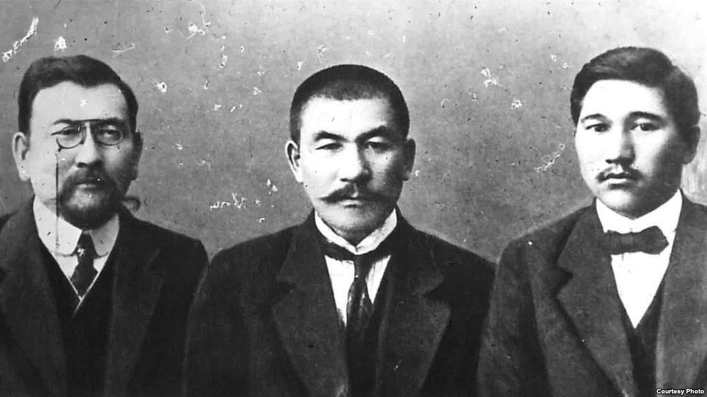
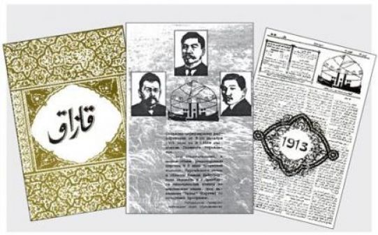
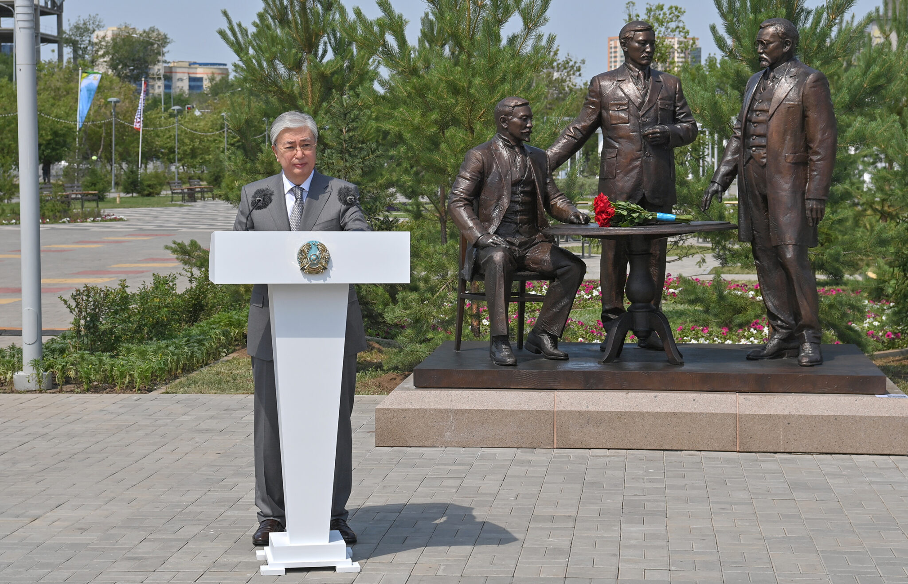
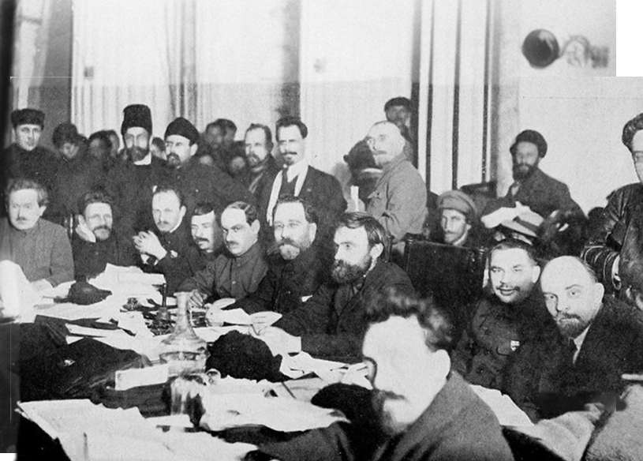

Alash Orda, the Kazakh democratic movement, was founded by Alikhan Bukeikhanov in 1917. The movement aimed to establish Kazakh autonomy within Russia.
Led by prominent Kazakh intellectuals such as Alikhan Bokeikhan, Akhmet Baitursynuly, and Mirzhakyp Dulatov, among others, the movement called for the recognition of Kazakh autonomy, the preservation of Kazakh culture and language, leading to profound social, cultural, and economic transformations.
The first All-Kirgiz (Kazakh) Congress was held in Orenburg on July 21-28 in 1917 with the establishment of the Alash party, the body that established Kazakhstan’s autonomy. The framing of an autonomous Kazakh government has been an ongoing process. The 1917 February revolution and the abdication of Tsar Nicholas II accelerated the political unity of various layers of Kazakh society. The hopes of Alash intellectuals for liberation from colonial rule strengthened, and they started taking steps toward creating autonomy. During the same congress, pivotal resolutions were reached on many matters, including the formation of a political party, land management, the formation of militia (police), court, educational issues and the status of Kazakh women, among others. The main resolution of the congress was to defend the right of Kazakhs to territorial and national autonomy within the democratic, parliamentary and federal Russian Republic. Bokeikhan was elected the chairman of the Alash party. The Kazakh newspaper was recognized as the official publication.
In his congratulatory speech, President Tokayev highlighted the role of Bokeikhan in Kazakhstan’s path to nationhood. “Alikhan Bokeikhan said that the way to freedom lies only through the unity of the nation. The statesmen of our country have shown loyalty to this admonition of the great son of our nation. Having united at a crucial moment, they were able to defend national interests,” said Tokayev. “The fateful document [Declaration on the State Sovereignty of the Kazakh SSR] corresponded to the aspirations and expectations of the people and was adopted thanks to the wisdom and prudence of the patriots of the country. Their courage and determination at a critical hour can be regarded as genuine heroism,” he added.
Alash Orda faced opposition from the Bolsheviks, who were consolidating power after the Russian Revolution and opposed nationalist movements. The Bolsheviks, committed to the idea of a unified Soviet state, saw nationalist groups like Alash Orda as a threat to their vision of proletarian unity. Consequently, they launched a campaign to suppress these movements, often through military force and political repression. Alash Orda, representing the interests and autonomy of the Kazakh people, found itself in a precarious position, having to navigate between asserting its nationalist goals and facing the overwhelming might of the Bolshevik regime. This conflict was emblematic of the larger struggles occurring across the former Russian Empire, where various ethnic and national groups sought to assert their independence in the chaotic aftermath of the revolution and the collapse of the tsarist regime. The Bolsheviks' approach to these movements was often ruthless, as they prioritized the establishment of a centralized, communist state over the aspirations of individual ethnic or national entities.
A distinguished Kazakh intellectual, Alikhan was a leader in both politics and cultural reform. He was known for his articulate writings and speeches, promoting modernization and cultural awakening among the Kazakh people. His appearance was marked by a traditional Kazakh attire, reflecting his deep connection to Kazakh culture and heritage.
Ahmet was a renowned educator, poet, and linguist. His contributions to the Kazakh language, particularly in the development of its modern alphabet and grammar, were immense. He was also an advocate for education and cultural revival. Ahmet often appeared in a more academic or scholarly attire, symbolizing his intellectual pursuits.
A younger member of the trio, Mirzhakip was a poet, writer, and political activist. His literary works, infused with nationalistic themes, played a significant role in the cultural and national awakening of the Kazakhs. He was known for his passionate oratory and his commitment to the Kazakh national cause. Mirzhakip's appearance was that of a youthful intellectual, often seen in modest yet dignified attire.